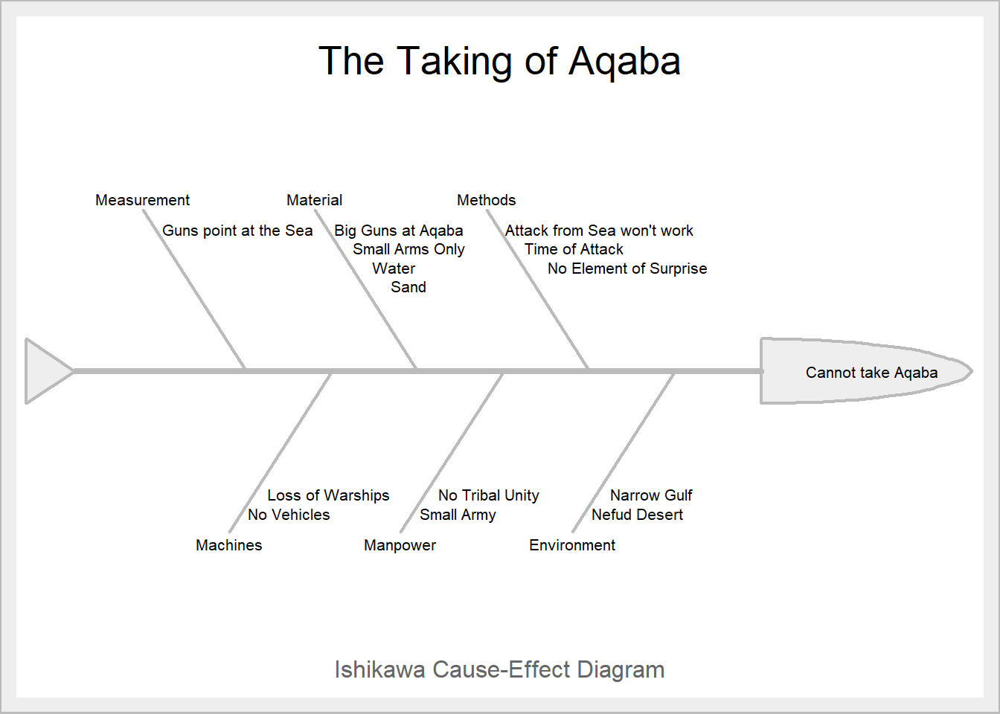

A TRIZ Analysis of Lawrence of Arabia
TRIZ
Abstract
The Attack on Aqaba: A TRIZ Analysis
Introduction
The movie Lawrence of Arabia is justly famous for its terrific story, great cast of characters and actors, and some truly legendary scenes. Here I take one of the iconic scenes from the movie, the attack on the port town of Aqaba and interpret the entire event and the build up to it from a TRIZ viewpoint.
I will give a short description of the movie plot first.
I then discuss the source of the problem, how it occurred to Lawrence, and how he went about solving it in this dramatic fashion. I give an analysis of the Problem from a (classical) TRIZ perspective, including the formulation of the Contradiction, Identification of Causes, the statement of the Ideal Final Result, and finally using the TRIZ Contradiction Matrix to find Inventive Principles that inform Lawrence’s solution. I also dwell in passing upon aspects of how this story can be interpreted as a manifestation of Mihaly Csikszentmihalyi’s Creativity Systems Model.
This piece stems from my teaching a course on Creative Thinking and Problem Solving based on TRIZ, titled Play and Invent, over the past 8 years or more at the Srishti Manipal Institute of Art, Design, and Technology, Bangalore, India. (https://srishtimanipalinstitute.in).
Lawrence of Arabia: a Summary
The movie is the story of T.E. Lawrence, the English officer who successfully united and led the diverse, often warring, Arab tribes during World War I in order to fight the Turks. The stellar cast includes Peter O’Toole as Lawrence, Omar Sharif as Ali, Alec Guinness as Prince Feisal, Anthony Quinn as Auda Abu Tayi, Claude Raines as Dryden, and Anthony Quayle as Col. Brighton. The director was David Lean. The editing of the film by Anne Coates is also much admired. (https://womenfilmeditors.princeton.edu/tag/lawrence-of-arabia/)
Lawrence is a complex, talented, and yet simple man, who is extremely well read (Greek philosophy and the Koran, for example) and is also an expert in Arab affairs and has considerable skill at map-making. Due to his being interpreted as insolent and insubordinate , he is given a lowly job at the HQ in Cairo. Dryden manages to convince the General that Lawrence should be allowed to go into Arabia and to find out what kind of long-term plans Prince Feisal is making for Arabia.
Here is the map of the events that are unfolding in the movie at this time.1
Lawrence encounters Ali in dramatic fashion at the Masturah Well, on the way to meet Feisal, and his Arab guide is shot by Ali, a direct experience for Lawrence of inter-tribe rivalry in Arabia. (Ali is a Harith, and Tafas the guide was a Hashemi). Lawrence peremptorily rejects an offer of help from Ali, and finds his way alone to Wadi Safra, where Feisal is camped. He is met by Col. Brighton as he nears the camp. Both enter camp just in time to witness another bombing raid by Turkish airplanes.
Later in the meeting with Feisal, Brighton tries to convince Feisal to retreat to Yenbo (Yanbu) and be out of range for the Turks, and where the British Army would supply them, train them to fight against the Turks. Feisal reluctantly accepts this plan, though he would rather the British navy take the port city of Aqaba and supply his army from there. Brighton simply scoffs at that idea, because the Turkish have 12 inch guns at Aqaba and the British have other things to do.
Lawrence has already intrigued Feisal by completing a verse from the Koran as it was being read by Selim, the cleric. At the end of the meeting, Feisal confronts Lawrence alone, as to his intentions in Arabia and finds out, to his astonishment, that Lawrence has his own interpretation of what his tasks and loyalties were, and these did not necessarily coincide with those of Brighton. In fact, Lawrence is not in favour of the Arab Army’s retreat to Yenbo, as it would become one small part of the British Army. As a parting remark, Feisal says to Lawrence that the Arabs need what no man can provide, a miracle.
Here is the video of that terrific tent meeting scene.
Lawrence’s Problem
Lawrence does not sleep that night. Provoked by Feisal’s parting remark, he sits up all night on a sand dune close to the camp, thinking about how Aqaba could be taken, since he wants the Arabs to continue fighting from where they were, and even advance if possible with British help. His detailed understanding of the Arabian geography, his knowledge of the Aqaba port and its fortifications, all come to the fore here. Aqaba is a port at the head end of a narrow gulf to the east of the Sinai Peninsula.
In the early morning, seemingly in a eureka moment, he decides that attacking Aqaba from the landward side would be a good solution, since the guns there could not be turned around.
Here is Lawrence trying to convince Ali about this plan:
Lawrence does not inform Brighton of his plans, nor even Feisal. It is Ali who informs Feisal of this enterprise. Clearly, Lawrence does not consider Brighton as a member of his Field (as defined by Csikszentmihalyi in his Creativity Systems Model), but Feisal is a Field Member to Ali.
Apropos, the act of sitting up all night can be seen as the Incubation and Elaboration stages of the 5 Stages of Creativity from Csikszentmihalyi (Preparation, Incubation, Insight, Elaboration, Execution).
A TRIZ Analysis of the Plan to Take Aqaba
For a TRIZ workflow, we proceed as follows:
First, using the method described in Open Source TRIZ, (https://www.youtube.com/watch?v=cah0OhCH55k), we identify knobs or parameters within the situation and see how turning these could lead to identifying a Cause for a Problem in the form of a Contradiction.
Here below is a quick Ishikawa Diagram for this purpose:
Turning the knobs/parameters in the Ishikawa Diagram, it seems that if the British allies attack Aqaba, they may win, BUT they may lose a few warships. If the Arabs want to attack, they are too small in number and have no warships, and hence their chances of success are very slim. Herein lies the Contradiction, which we can now specify as an Administrative Contradiction(AC) in plain English:
AC: The Arabs need the British to supply them via Aqaba port. Aqaba has huge guns and they will sink the British ships in that narrow gulf if they try a naval attack. So the Arabs need to take Aqaba without losing British ships.
Next, based on this Contradiction and the inspection of the Ishikawa Diagram above, we are now ready to define the Ideal Final Result:
IFR: The Arabs need to attack and take Aqaba port, and the big guns there should have no effect.
Note how the tone of this IFR is like a “eat my cake and have it too”. Very typical for IFRs, this impossible-sounding tone!
Let us take the AC and convert it into a Technical Contradiction(TC). We will look at the 48 TRIZ Parameters in the TRIZ Contradiction Matrix (PDF) and see which Parameter we want to improve, while not worsening another. Here is what we can attempt, stating the Contradiction both ways2:
- TC 1: Increase
Duration of Action of a Moving Object(12) and not worsenStability of Objects Composition(21)
- TC 2: IncreaseStability of Objects Composition(21) and not worsenDuration of Action of a Moving Object(12)
Here we choose these Parameters based on our IFR that the guns at Aqaba should not affect the Arab attack at all. The Parameters chosen from the TRIZ Matrix can be thought of as metaphors for the knobs that lie within our AC. Going from the AC to the TC is an act of making metaphors. We could easily have chosen the Parameter Power(18) or Illumination Intensity(23) to “metaphorize” the effectiveness of the attack, if our imaginations run in that direction. There is here a considerable flexibility and possibility for imaginative interpretations of the AC, but using the language of TRIZ.
We could even stretch to making a Physical Contradiction(PC)3 happen:
PC: The Ships must be near the guns but not be near enough to be shot at. (They must be near and not near at the same time)
Solving the Technical Contradiction
Let us take the both the TC-s into the Contradiction Matrix and arrive at the list of TRIZ Inventive Principles. Here is the Matrix solution for TC-1 in the figure below:

The Inventive Principles are:(TC1)
- IP 13 (The Other Way Around)
- IP 35 (Parameter Change)
- IP 24 (Intermediary)
- IP 40 (Composite Materials)
and (TC2)
- IP 10 (Preliminary Action)
- IP 5 (Merging)
-
IP 35 (Parameter Change)
IP 13 (The Other Way Around)
How are we to apply these Inventive Principles? Here again is an imaginative exercise as we map these Generalized Solutions back into the Problem at hand:
IP 13: The Other Way Around. How? Not attack by sea? Wait…ATTACK BY LAND!! Change the DIRECTION of Attack! So attack from the other side, the land side!! (We could retrospectively add this parameter to the Ishikawa Diagram too). Will this work? Yes, the guns can’t turn around !!
IP 35: Parameter Change. But “ships” on land?? Note, the desert is an ocean into which no oar is dipped. Sand and Water are both Resources in the problem, as we have duly noted in the Ishikawa Diagram. So a different kind of ocean and therefore a different kind of ship? At a stretch, we can say the warships of the British Navy are being substituted with the use of ….Camels!! And, metaphorically speaking, it is still an attack using ships….The Ships of the Desert!! Parameter Change.
IP 10: Prior Action. How? Lawrence and Ali are far from Aqaba and cannot do anything “in advance”. What could this be?
IP 5: Merging. However, on the way to Aqaba, Lawrence and Ali must recruit the Howeitat tribe “in advance” of their attack !! As Lawrence tells Ali, If 50 men came out of the Nefud Desert, they might be 50 men other men would join. This is in accordance with what IP 10 is suggesting, to get other tribes to join in, in advance of the attack.
IP 40: Composite Materials. What object within the situation can we reconstitute with smaller pieces of different types? The British Army…so an army made up of pieces? Yes! The Tribes need to unite into one composite army.
And, instead of large warships, the Arabs switch to a composite force with camels…
So IP 13 works nicely now, along with IP 35 and IP 40, to give us a camel-borne attack from the landward side. IP 10 also teams up with IP 40 and IP 5 to give the idea of tribe unification.
And so Lawrence and Ali, with the help of Auda Abu Tayi, attack Aqaba port from the landward side by crossing the Nefud desert on camels, and take it! And we have justified their decision using TRIZ !!
Here is the final solution in action !!
I hope that was as much fun to read as it was for me to write it up !!
Points to Ponder
- Do we each of us need a Dryden to vouch for us and help us get access to the Field?
- Does TRIZ work in both mundane and industrial contexts? (Yes of course!)
- Can we just take the 40 Inventive Principles directly and throw them at every Problem, without necessarily going through the process of creating Contradictions and IFR? Hipple’s book has a remark in this direction.
References
- Lawrence of Arabia at the Internet Movie Data Base https://www.imdb.com/title/tt0056172/
- Mihaly Csikszentmihalyi, Creativity, Flow, and the Psychology of Discovery and Invention. Harper Perennial; Reprint edition (August 6, 2013)
- Jack Hipple, The Ideal Result and How to Achieve It. Springer; 2012th edition (June 26, 2012)
- Valery Souchkov, Defining Contradictions. http://www.xtriz.com/Training/TRIZ_DefineContradiction_Tutorial.pdf
Footnotes
I was not able to ascertain who is the author of this map. I would be happy to write to obtain permission and use it with acknowledgement.↩︎
The Contradiction Matrix is not quite symmetric, so stating the Contradiction both ways allows us to access a slightly larger set of Inventive Principles from two cells of the Matrix.↩︎
Arriving at Physical Contradictions is not always easy! If we can, then there are a very crisp set of TRIZ Separation Principles that we can apply to solve the Problem.↩︎